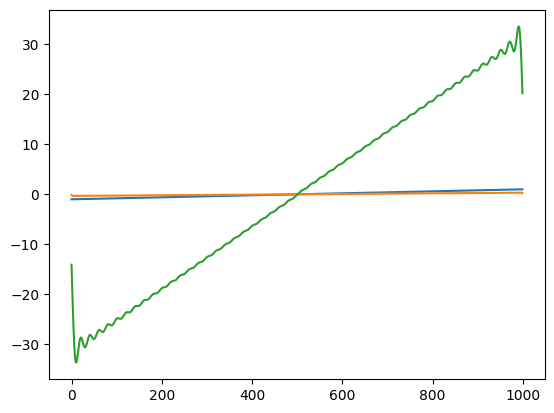
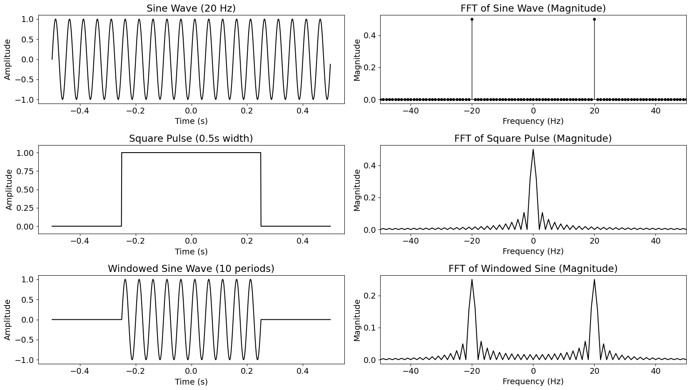

\[
\mathbf {STFT} \{x(t)\}(\tau ,\omega )\equiv X(\tau ,\omega )=\int _{-\infty }^{\infty }x(t)w(t-\tau )e^{-i\omega t}\,dt
\]
\[
\mathbf {STFT} \{x[n]\}(m,\omega )\equiv X(m,\omega )=\sum _{n=0}^{N-1}x[n]w[n-m]e^{-i\omega n}
\]
\[
\frac{\partial^2 y}{\partial x^2} = \frac{1}{c^2}\frac{\partial^2 y}{\partial t^2}
\]
\[
y(x,t) = \sum_{n=1}^N \Big [\frac{2h}{n^2\pi^2} \frac{L^2}{d(L-d)}\,\sin\Big(\frac{d n \pi}{L}\Big)\Big ]\ \sin\Big(\frac{n\pi}{L}x\Big) \cos\Big(2\pi\frac{n c}{2 L} t\Big) \ .
\]
\[
y(x,t) = \sum_{m=1}^\infty A_m \sin\Big(\frac{m\pi}{L}x\Big) \exp(i\omega_{m}t)
\]
\[
u_n(t)= \sum_{m=1}^N A_{m} \sqrt{\frac{2}{N}} \sin\Big(\frac{mn\pi}{N+1}\Big)\exp(i\omega_{m}t)
\]
\[
\omega_m = \sqrt{\frac{4K}{M}}\left| \sin\frac{m\pi}{2(N+1)}\right|
\]
A equals -K over M times Laplacian matrix 5x5 with 2 in the diagonal and -1 off#
\[
A = -\frac{K}{M} \cdot L
\]
\[\begin{split}
L = \begin{bmatrix}
2 & -1 & 0 & 0 & 0 \\
-1 & 2 & -1 & 0 & 0 \\
0 & -1 & 2 & -1 & 0 \\
0 & 0 & -1 & 2 & -1 \\
0 & 0 & 0 & -1 & 2
\end{bmatrix}
\end{split}\]
All in one formula#
\[\begin{split}
A = - \omega_0^2 \cdot \begin{bmatrix}
2 & -1 & 0 & 0 & 0 \\
-1 & 2 & -1 & 0 & 0 \\
0 & -1 & 2 & -1 & 0 \\
0 & 0 & -1 & 2 & -1 \\
0 & 0 & 0 & -1 & 2
\end{bmatrix}
\end{split}\]
\[
\frac{\partial^2 u_n(t)}{\partial t^2} = \sum_{m=1}^N A_{nm} u_m(t)
\]
Wave equation#
\[
\frac{\partial^2 y(t)}{\partial t^2} = c^2 \frac{\partial^2 y(t)}{\partial x^2}
\]
Matrix in wolfram syntax#
\[
{{2, -1, 0, 0, 0}, {-1, 2, -1, 0, 0}, {0, -1, 2, -1, 0}, {0, 0, -1, 2, -1}, {0, 0, 0, -1, 2}}
\]
\[
y(t) = \frac{dx}{dt}
\]
\[
y[n] = x[n] - x[n-1]
\]
\[
Y = X - RX = \frac{X}{1-R}
\]
\[
y(t) = \int x(t) dt
\]
\[
y[n] = x[n] + y[n-1]
\]
\[
\begin{align}
Y = X + RY & \, & X = \frac{Y}{1-R}
\end{align}
\]
\[
\Delta t
\]
\[
SR = \frac{1}{\Delta t}
\]
\[
2^N
\]
\[
x[n] = \sum_{k=-\infty}^{\infty} x[n] \delta[k-n]
\]
Convolución discreta
\[ y[n] = \alpha_0 x[n-0] + \alpha_1 x[n-1] + \alpha_2 x[n-2] + \cdots \]
\[ y[n] = h[0]x[n-0] + h[1]x[n-1] + h[2]x[n-2] + \cdots \]
\[
y[n] = \sum_{k=0}^{N-1} h[k]x[n-k]
\]
\[
y[n] = \left(h * x\right)[n]
\]
\[ f (t) * g (t)\ \stackrel{\mathrm{.}}{=} \int_{-\infty}^{\infty} f(\tau) g(t - \tau) d\tau \]
\[{\displaystyle f[n]*g[n]=\sum _{m=0 }^{M }f[m]g[n-m]}\]
\[
\displaystyle R_{W}(n)=\operatorname {E} [W(k+n)W(k)]
\]
\[
\displaystyle R_{W}(n)=\sigma ^{2}\delta (n)
\]
Propiedades de la convolución
Conmutativa Asociativa Distributiva Asociativa con la multiplicación por escalares Elemento neutro
\[
\left(h * x\right)[n] = \left(x * h\right)[n]
\]
\[
\left(h * x\right) * g = h * \left(x * g\right)
\]
\[
h * \left(x_1 + x_2\right) = h * x_1 + h * x_2
\]
\[
\alpha \left(h * x\right) = \left(\alpha h\right) * x
\]
\[
x * \delta = x
\]
Sistema lineal#
\[ x \rightarrow S \rightarrow y \]
\[ \alpha x \rightarrow S \rightarrow \alpha y \]
\[ x_1 \rightarrow S \rightarrow y_1, \quad y_2 \rightarrow S \rightarrow y_2 \]
\[ x_1 + x_2 \rightarrow S \rightarrow y_1 + y_2 \]
Sistema invariante en el tiempo#
\[ x(t) \rightarrow S \rightarrow y(t) \]
\[ x(t - t_0) \rightarrow S \rightarrow y(t - t_0) \]
\[
x(t)
\]
\[
y(t)
\]
\[
x[n]
\]
\[
y[n]
\]
\[S:\R^N \rightarrow \R^M\]
\[x(t):t \in \R \rightarrow x \in \R^2\]
\[\begin{split}x(t) = \begin{bmatrix} x_L(t)\\ x_R(t) \end{bmatrix}\end{split}\]
\[V(x,y,z): (x,y,z) \in \R^3 \rightarrow V \in \R^3\]
\[\begin{split}V(x,y,z) = \begin{bmatrix} V_x(x,y,z) \\ V_y(x,y,z) \\ V_z(x,y,z) \end{bmatrix}\end{split}\]
\[T(\theta): \theta \in [0,2\pi) \rightarrow T \in \R\]
\[S:\mathbb{K}_{in}^N \rightarrow \mathbb{K}_{out}^M\]
\[x[n]: n \in \{0,1,2,...,N-1\} \rightarrow x \in \{-2^8,..., 2^8-1\}\]
import numpy as np
import matplotlib.pyplot as plt
from scipy.signal import fftconvolve
# fft convolve of a ramp with dirichlet kernel
N = 1000
t = np.linspace(-np.pi, np.pi, N, endpoint=False)
x = np.linspace(-1,1, len(t), endpoint=False)
print(len(x))
# dirichlet kernel
def dirichlet_kernel(x,n):
x = x.copy()
mask = x==0
x[mask] = 1
d = np.sin( (n+1/2)*x ) / np.sin(x/2)
d[mask] = n*2 + 1
return d
from scipy.special import diric
1000
# t = np.linspace(-np.pi, np.pi, 1000, endpoint=False)
# n = 10
# d = dirichlet_kernel(t, n)
# plt.plot(t, d)
# # d2 = diric(t*2, n)
# # plt.plot(t, d2)
n = 100
d = dirichlet_kernel(t, n)
d = d/n/n*np.pi
y = fftconvolve(x, d, mode='same')
d2 = diric(t, n)*np.pi
y2 = fftconvolve(x, d2 , mode='same')
plt.plot(x)
plt.plot(y);
plt.plot(y2);
# Assuming necessary libraries like numpy (as np), matplotlib.pyplot (as plt),
# and numpy.fft functions (fft, fftshift, fftfreq) are imported previously.
import numpy as np
import matplotlib.pyplot as plt
from scipy.fft import fft, fftshift, fftfreq
# increase font size
plt.rcParams.update({'font.size': 14})
# Define time and frequency parameters
fs = 1000 # Sampling frequency in Hz (ensure Nyquist criterion is met for 20 Hz)
duration = 1.0 # seconds
n_points = int(fs * duration)
t = np.linspace(-duration / 2, duration / 2, n_points, endpoint=False)
f = fftshift(fftfreq(n_points, 1 / fs))
# Create the 3x2 subplot grid
fig, ax = plt.subplots(3, 2, figsize=(14*1.2, 8*1.2)) # Adjusted figsize for better layout
# --- Row 1 ---
# Col 1: Sine wave (20 Hz)
f_sine = 20 # Hz
sine_wave = np.sin(2 * np.pi * f_sine * t)
ax[0, 0].plot(t, sine_wave, color='black')
ax[0, 0].set_title('Sine Wave (20 Hz)')
ax[0, 0].set_xlabel('Time (s)')
ax[0, 0].set_ylabel('Amplitude')
ax[0, 0].grid(False)
# Col 2: FFT of Sine wave (Dirac delta representation using stem)
sine_fft = fftshift(fft(sine_wave))
sine_fft_mag = np.abs(sine_fft) / n_points # Normalize magnitude
# Use stem plot - peaks should be at +/- 20 Hz
markerline, stemlines, baseline = ax[0, 1].stem(f, sine_fft_mag, linefmt='k-', markerfmt='ko', basefmt='k-')
plt.setp(markerline, 'markersize', 4, 'color', 'black')
plt.setp(stemlines, 'color', 'black', 'linewidth', 1)
plt.setp(baseline, 'color', 'black', 'linewidth', 1)
ax[0, 1].set_title('FFT of Sine Wave (Magnitude)')
ax[0, 1].set_xlabel('Frequency (Hz)')
ax[0, 1].set_ylabel('Magnitude')
ax[0, 1].set_xlim(-50, 50) # Focus on the region around +/- 20 Hz
ax[0, 1].grid(False)
# --- Row 2 ---
# Col 1: Square pulse (0.5s width centered at 0)
pulse_width = 0.5
square_pulse = np.zeros_like(t)
square_pulse[(t >= -pulse_width / 2) & (t < pulse_width / 2)] = 1
ax[1, 0].plot(t, square_pulse, color='black')
ax[1, 0].set_title('Square Pulse (0.5s width)')
ax[1, 0].set_xlabel('Time (s)')
ax[1, 0].set_ylabel('Amplitude')
ax[1, 0].set_ylim(-0.1, 1.1) # Set y-limits for clarity
ax[1, 0].grid(False)
# Col 2: FFT of Square pulse (Sinc function shape)
square_fft = fftshift(fft(square_pulse))
square_fft_mag = np.abs(square_fft) / n_points # Normalize magnitude
ax[1, 1].plot(f, square_fft_mag, color='black')
ax[1, 1].set_title('FFT of Square Pulse (Magnitude)')
ax[1, 1].set_xlabel('Frequency (Hz)')
ax[1, 1].set_ylabel('Magnitude')
ax[1, 1].set_xlim(-50, 50) # Focus on the main lobe and side lobes
ax[1, 1].grid(False)
# --- Row 3 ---
# Col 1: Sine wave multiplied by square pulse (windowed sine)
# This results in 20 Hz * 0.5 s = 10 periods within the pulse
windowed_sine = sine_wave * square_pulse
ax[2, 0].plot(t, windowed_sine, color='black')
ax[2, 0].set_title('Windowed Sine Wave (10 periods)')
ax[2, 0].set_xlabel('Time (s)')
ax[2, 0].set_ylabel('Amplitude')
ax[2, 0].grid(False)
# Col 2: FFT of Windowed Sine wave
windowed_sine_fft = fftshift(fft(windowed_sine))
windowed_sine_fft_mag = np.abs(windowed_sine_fft) / n_points # Normalize magnitude
ax[2, 1].plot(f, windowed_sine_fft_mag, color='black')
ax[2, 1].set_title('FFT of Windowed Sine (Magnitude)')
ax[2, 1].set_xlabel('Frequency (Hz)')
ax[2, 1].set_ylabel('Magnitude')
ax[2, 1].set_xlim(-50, 50) # Focus on the convolved spectrum
ax[2, 1].grid(False)
# Adjust layout and display plot
plt.tight_layout()
plt.show()


Uncertainty principle
\[
\int_{-\infty}^{\infty} t^2 |x(t)|^2 dt \cdot \int_{-\infty}^{\infty} \omega^2 |X(\omega)|^2 d\omega \geq \frac{1}{4}
\]
\[
\sigma_t \cdot \sigma_\omega \geq \frac{1}{2}
\]
Digital filter#
\[
\sum_{k=0}^{M} a_{k}y[n-k] = \sum_{k=0}^{N} b_{k} x[n-k]
\]
Analog filter#
\[
\sum_{k=0}^{M} a_{k} \frac{d^k y(t)}{dt^k} = \sum_{k=0}^{N} b_{k} \frac{d^k x(t)}{dt^k}
\]
\[\begin{split}
\begin{align}
x(t) &= e^{s t} \\
y(t) &= (h \ast x)(t) \\
y(t) &= H(s) e^{s t}\\
y(t) &= H(s) x(t)
\end{align}
\end{split}\]
\[
H(s) = \int_{-\infty}^{\infty} h(\tau) e^{-s \tau} d\tau
\]
Para el caso discreto:
\[\begin{split}
\begin{align}
x[n] &= z^{n} \\
y[n] &= (h \ast x)[n] \\
y[n] &= H(z) z^{n}\\
y[n] &= H(z) x[n]
\end{align}
\end{split}\]
\[\begin{split}
H(z) = \sum_{k=-\infty}^{\infty} h[k] z^{-k} \\
\end{split}\]
\[
\sum_{k=0}^{N} a_k \frac{d^k y(t)}{dt^k} = \sum_{k=0}^{M} b_k \frac{d^k x(t)}{dt^k}.
\]
\[
\left( \sum_{k=0}^{N} a_k s^k \right) Y(s) = \left( \sum_{k=0}^{M} b_k s^k \right) X(s),
\]
\[
H(s) = \frac{ \sum_{k=0}^{M} b_k s^k }{ \sum_{k=0}^{N} a_k s^k }.
\]